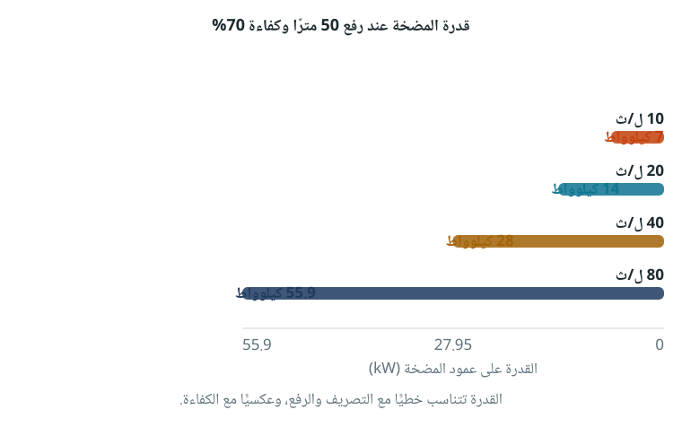

كم كيلوواط يستهلك رفع الماء؟
غيّر التصريف والرفع والكفاءة، وتابع القدرة المطلوبة والاستهلاك لكل متر مكعب.
P = ρ·g·H·Q / η
الكفاءة في اللوحة للمضخة وحدها؛ كفاءة المحرك تُضاف فوقها عند حساب سحب الكهرباء.
افتراضات النموذج والمصدر
ماء بكثافة 998 kg/m³
سائل غير قابل للانضغاط بلا غازات مذابة
نقطة تشغيل ثابتة
الكفاءة تشمل المضخة دون المحرك
المضخة تنقل طاقة: ترفع الماء مسافة معينة بتصريف معيّن. القدرة الهيدروليكية هي حاصل ضرب الوزن المتدفق في الثانية في ارتفاع الرفع، ثم تُقسم على كفاءة المضخة للحصول على القدرة الميكانيكية المطلوبة على العمود.
بين 55 و75% من قدرة المضخة تصل إلى الماء، والباقي يضيع حرارةً في المضخة والمحرّك. لذلك يقاس الاختيار الصحيح بالكفاءة عند نقطة التشغيل الفعلية، لا بالكفاءة القصوى في الكتالوج.
الآلية
كيف يحدث الأمر على مستوى الجسيمات أو المتغيّرات المباشرة
الريشة الدوارة تنقل زخمًا إلى الماء فترفع طاقته الحركية ثم يُحوَّل جزء منها إلى ارتفاع ضغط وسرعة. الطاقة المكتسبة في الماء = ρgHQ، وهي أصغر من الطاقة المأخوذة من المحرّك بفارق الاحتكاك الداخلي والدوامات وفقد المحرك والحشوة.
الأرقام والوحدات
العلاقات والوحدات والنطاقات العددية التي تسند الشرح
P = ρ·g·H·Q/η. لتصريف 40 لتر/ث ورفع 50 م وكفاءة 0.70 تكون القدرة = 998×9.81×50×0.040/0.70 = 28 كيلوواط، أي 0.7 كيلوواط·ساعة لكل متر مكعب مرفوع. والكفاءة 0.70 شائعة للمضخات الطاردة حتى 100 كيلوواط.
الفرق الدقيق
المفهوم الملتبس الذي يُخلَط به، وأين ينفصلان
يُخلط بين الرفع الساكن والرفع الكلي: الكلي يشمل احتكاك الأنبوب وفقد الانحناءات والقطع، وقد يضاعف الحساب في الشبكات الطويلة. ويُخلط بين القدرة الهيدروليكية وقدرة المحرك المطلوبة من الشبكة، والفرق كفاءة المحرك نفسه.
حدود التعريف
أين ينكسر التعريف أو النموذج وما الذي لا يفسّره
المعادلة تفترض نقطة تشغيل ثابتة وسائلًا غير قابل للانضغاط. في الواقع تتحرك نقطة التشغيل على منحنى المضخة مع تغيّر الشبكة، والتشغيل بعيدًا عن نقطة الكفاءة القصوى يرفع الاستهلاك ويقصّر عمر المحمل.

| الكمية | القيمة | المصدر |
|---|---|---|
| كثافة الماء عند 20 °م | 998 kg/m³ | [1] |
| تسارع الجاذبية | 9.81 م/ث² | [2] |
| كفاءة مضخة طاردة نموذجية | 0.70 | [3] |
المصادر
- 1 Pump power calculation — Engineering ToolBox. www.engineeringtoolbox.com/pumps-power-d_505.html · اطُّلع عليه 2026-11-16
- 2 Standard gravity — NIST. www.nist.gov/pml/weights-and-measures · اطُّلع عليه 2026-11-16
- 3 Centrifugal pump efficiency — U.S. Department of Energy. www.energy.gov/eere/amo/pumps · اطُّلع عليه 2026-11-16
راجعه: مراجعة آلية — بوابة الديوان (فحص بنيوي وأرقام) 2026-11-16 · 2026-11-16 · آخر تحديث 2026-11-16